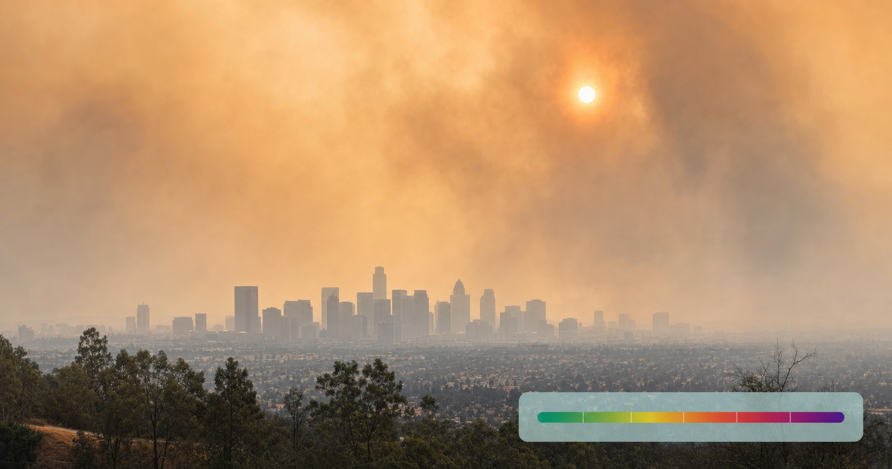

Key Takeaways
- Wildfire smoke is not the same as urban smog. Peer-reviewed evidence suggests wildfire PM2.5 is roughly 5 to 10 times more harmful than an equivalent mass of general urban particulate matter, driven by higher organic-carbon content and more oxidative stress on lung and blood-vessel tissue.[8][19]
- The AQI number that matters most is 101 (Orange) for sensitive groups and 151 (Red) for the general public. At 201 (Purple) everyone should avoid outdoor exertion; at 301 (Maroon) everyone should stay indoors. EPA tightened these breakpoints in Feb 2024, so older wildfire guidance may cite outdated numbers.[1][2]
- Only NIOSH-approved N95, KN95, or KF94 respirators meaningfully protect against wildfire smoke. Lab studies show N95 filters more than 94 percent of wildfire-range particles, surgical masks 68 to 81 percent, and cloth masks only 9 to 33 percent. Population modeling estimates N95 use could reduce smoke-attributable respiratory hospitalizations by 22 to 39 percent.[9][10]
- A DIY Corsi-Rosenthal box (a 20-inch box fan plus four MERV-13 furnace filters) delivers a measured Clean Air Delivery Rate of about 401 cubic feet per minute in EPA testing, comparable to a $700 commercial HEPA unit. Peer-reviewed corroboration shows it can cut chamber PM2.5 from 80 to under 10 micrograms per cubic meter in roughly 6 minutes.[4][5]
- Wildfire smoke is associated with real increases in cardiovascular events, not just respiratory symptoms. A CDC-authored study of California's 2015 wildfire season found all-cause cardiovascular emergency-department visits rose 15 percent (RR 1.15, 95 percent CI 1.09 to 1.22) on dense smoke days, with the largest increase in adults aged 65 and older.[15]
- Higher-risk groups include people with asthma, COPD, heart disease, or diabetes, pregnant people, children under 5, adults 65 and older, and outdoor workers. These groups should take action one AQI category earlier than the general public.[3][7]

Here is what has changed since 2023: wildfire smoke is no longer a Pacific Northwest problem or a California problem or a summer-out-West problem. In July 2026 alone, smoke from more than 858 active fires across Canada drove air quality indexes above 300 across parts of the Midwest and Northeast, and Detroit briefly recorded the worst air of any city in the world, at an AQI of 600.[11] Chicago, Toronto, and much of the Ohio Valley sat in the "hazardous" band. More than 100 million people across 18 US states plus Washington D.C. lived under air quality alerts.[12] The Guardian tied the smoke to the disruption of the World Cup Final weekend in New Jersey.[13] Days later, air quality alerts covered Oregon, Washington, Arizona, California, Colorado, Idaho, and Utah from Pacific Northwest fires, with plumes drifting back toward the Midwest and Northeast.[14]
The other thing that has changed is what we know about the health effects. As recently as five years ago, most guidance treated wildfire smoke as broadly similar to bad urban air pollution. The last few years of peer-reviewed evidence have shown that wildfire particulate matter is genuinely worse: more toxic per microgram than traffic-related fine particles, with clearer links to asthma attacks, heart attacks, strokes, and pregnancy complications.[8][15] The exposures now show up in places with no history of tracking them.
This guide is a physician's attempt to give you a clear, evidence-based playbook: what the AQI number actually means, which mask is worth wearing and which is not, how to make a highly effective indoor air cleaner for about $50, what symptoms to watch, and when to skip the telehealth visit and go to the ER. Every material claim is cited to a primary source.
What Wildfire Smoke Actually Is (and Why It Is Worse Than Smog)
Wildfire smoke is a moving chemical soup, but the main health driver is a single component: fine particulate matter smaller than 2.5 microns in diameter, known as PM2.5. These particles are small enough to pass deep into the lungs and, in many cases, cross into the bloodstream. Alongside PM2.5, wildfire smoke also contains carbon monoxide, volatile organic compounds (VOCs), nitrogen oxides, and downwind-produced ozone.[3]
What makes wildfire PM2.5 different from urban PM2.5 is composition, not size. Wildfire particles are up to 50 percent organic carbon by mass and contain a higher share of polar organic compounds, which generate more free radicals and greater oxidative stress in exposed tissue than the metal-and-soot mixture typical of traffic pollution.[8] That biological difference matters clinically. In one 749-city global time-series study, each 10 microgram per cubic meter increase in wildfire PM2.5 (3-day moving average) was associated with a 1.9 percent increase in all-cause mortality, a 1.7 percent increase in cardiovascular mortality, and a 1.9 percent increase in respiratory mortality; approximately 33,510 deaths per year globally are attributable to short-term wildfire smoke exposure.[19] A separate 2021 Nature Communications analysis found wildfire-specific PM2.5 caused a 1.3 to 10 percent increase in respiratory hospitalizations per 10 microgram per cubic meter increase, versus 0.67 to 1.3 percent for non-wildfire PM2.5, roughly "up to 10 times more harmful" in the direction of effect.[8]
The exact multiplier varies by outcome and study, but the direction is well replicated across at least five independent peer-reviewed sources: wildfire PM2.5 is more harmful than an equivalent mass of general PM2.5. You should not assume that a familiar bad-air-day in Los Angeles or Beijing predicts how your body will react to a wildfire-smoke episode of the same AQI reading.
The size differences also explain why wildfire smoke moves through the body so effectively. PM10 particles (like ordinary dust) mostly stop in the nose and throat. PM2.5, the dominant component of wildfire smoke, reaches the small bronchioles and alveoli where gas exchange happens. Ultrafine PM0.1 particles cross the alveolar wall entirely and enter the bloodstream, from which they can reach the heart, brain, and other organs.[31][32][33]
The AQI Number That Matters (And What Each Threshold Means)
The Air Quality Index (AQI), maintained by EPA at AirNow.gov, converts pollutant concentrations into a 0 to 500+ scale with six health-based categories. In February 2024, EPA tightened the PM2.5 breakpoints for Unhealthy, Very Unhealthy, and Hazardous. Any guidance quoting the old numbers is out of date.[2]
0-50
51-100
101-150
151-200
201-300
301+
| Category | AQI | PM2.5 (24-hr, µg/m³) | What sensitive groups should do | What everyone else should do |
|---|---|---|---|---|
| Good | 0-50 | 0.0-9.0 | Normal activity | Normal activity |
| Moderate | 51-100 | 9.1-35.4 | Unusually sensitive people should watch for symptoms with heavy exertion | Normal activity |
| Unhealthy for Sensitive Groups | 101-150 | 35.5-55.4 | Shorter, lighter outdoor activity or move indoors | Normal activity, watch for symptoms |
| Unhealthy | 151-200 | 55.5-125.4 | Avoid outdoor exertion | Reduce outdoor exertion; take more breaks |
| Very Unhealthy | 201-300 | 125.5-225.4 | Avoid all outdoor physical activity | Avoid prolonged or heavy exertion outdoors |
| Hazardous | 301-500 | 225.5+ | Remain indoors, activity minimized | Remain indoors, activity minimized |
Category descriptions and PM2.5 breakpoints are from EPA's AirNow AQI basics page and the 2024 PM NAAQS fact sheet.[1][2]
Check fire.airnow.gov once in the morning during any smoke event. It overlays live AQI, active fires, and NOAA HRRR-Smoke plume forecasts on a single map. If you cannot easily get to a computer, the free AirNow app does the same. During cross-border smoke episodes, US readings can move by 50 to 100 AQI points in six hours as plumes shift.
Cross-Border Realities: AQI (US) vs. AQHI (Canada)
Canada uses a different system called the Air Quality Health Index (AQHI), a 1-to-10+ scale developed jointly by Health Canada and Environment and Climate Change Canada.[16] AQI and AQHI are not on the same numeric scale. An AQHI of 7 is not equivalent to an AQI of 7.
| AQHI | Risk Level | At-risk groups | General population |
|---|---|---|---|
| 1-3 | Low | Enjoy usual outdoor activities | Ideal conditions |
| 4-6 | Moderate | Consider reducing strenuous outdoor activity if symptoms appear | No modification needed unless experiencing symptoms |
| 7-10 | High | Reduce or reschedule strenuous outdoor activity | Consider reducing strenuous outdoor activity |
| 10+ | Very High | Avoid strenuous outdoor activity | Reduce or reschedule strenuous outdoor activity |
Health Canada issues a Special Air Quality Statement at AQHI 7 to 10 and an Air Quality Advisory at AQHI 10+ sustained for three or more hours.[16] During wildfire smoke events specifically, some provincial dashboards report an hourly AQHI calculated primarily from PM2.5 rather than the standard three-pollutant blend, so the number responds faster to changing conditions.
Practical rule for the border regions: if you live within about 200 miles of the Canadian border, you may see US and Canadian numbers side by side on social media and news reports during a smoke event. Use AirNow.gov (or fire.airnow.gov) for US-scale AQI in the United States, and the Health Canada AQHI portal at canada.ca for AQHI in Canada. Both scales trigger similar action thresholds in spirit, they just get there with different math.
Symptoms Most People Ignore, and the Ones That Mean Go Now
The most common wildfire smoke symptoms are underwhelming: coughing, scratchy throat, runny nose, stinging eyes, sinus irritation, headache, tiredness, and a slightly faster heartbeat.[3] None of these will send you to the ER on their own. But three specific patterns should prompt real attention.
Green-zone symptoms (usually self-limited)
- Cough, sore or scratchy throat, runny nose, sinus irritation
- Stinging or watery eyes
- Headache, fatigue, faster heartbeat with mild exertion
- Mild wheezing that responds fully to a rescue inhaler and does not return within a few hours
These usually resolve within 24 to 72 hours once air quality returns to Good. If they persist beyond several days after air quality clears, contact a clinician.
Yellow-zone symptoms (contact a clinician, telehealth appropriate)
- Cough that will not go away or is producing colored sputum
- Wheezing that needs rescue inhaler more than every 4 hours
- New shortness of breath, or shortness of breath that limits normal activity
- In people with heart disease: palpitations, unusual fatigue, or new mild chest discomfort[7]
- Sinus pain lasting more than 10 days with fever above 102°F, purulent nasal discharge, or facial pain worsening after initial improvement (points toward bacterial superinfection)
These deserve a physician conversation the same day. A same-day telehealth visit is often the right first step, particularly for medication step-ups (rescue-inhaler frequency, short prednisone burst for asthma exacerbation, or antibiotics if a bacterial sinus infection is suspected). Whether that visit happens through TeleDirectMD, another telehealth service, or an in-person clinic, the goal is to catch a modest deterioration before it turns into a red-zone event.
Red-zone symptoms (call 911 or go to the ER now)
- Chest pain, chest pressure, or pain radiating to arm or jaw
- Severe trouble breathing (unable to speak in full sentences)
- Asthma attack not responding to a rescue inhaler after two to three treatments
- Blue lips or fingertips
- Facial or arm weakness, sudden confusion, slurred speech (possible stroke)
- Fainting or near-fainting
These are all standard emergency-medicine red flags, called out specifically for cardiac and respiratory presentations during smoke events by CDC.[7]
Who Is Highest Risk (and Should Move One Category Earlier)
Not everyone reacts to smoke the same way. CDC, the American Lung Association, and Health Canada all converge on the same list of higher-risk groups:[3][17][18]
- People with asthma or COPD. Each 10 microgram per cubic meter increase in wildfire PM2.5 has been associated with roughly a 6 percent rise in asthma hospitalizations and a 7 percent rise in asthma emergency-department visits.[20] A 2025 analysis of more than 6 million ED visits across five Western US states found wildfire PM2.5 had a stronger association with asthma visits than non-smoke PM2.5.[21]
- People with heart disease. CDC data from California's 2015 wildfire season found all-cause cardiovascular ED visit risk rose 15 percent on dense smoke days, greatest in adults 65 and older, with elevated signals for myocardial infarction, ischemic heart disease, heart failure, dysrhythmia, pulmonary embolism, ischemic stroke, and TIA.[15]
- Pregnant people. CDC and ALA both list pregnancy as a higher-risk state. The specific pregnancy-complication evidence base is still developing; treat pregnancy as a "take action one AQI category earlier" indication and coordinate with your obstetric provider if you have questions.
- Children, particularly under 5. Smaller airways, higher minute ventilation per body weight, and more time outdoors mean children absorb a larger relative dose of smoke. The American Academy of Pediatrics recommends stopping athletics and PE at AQI above 150 for all children, with earlier thresholds for younger or more sensitive children.[23]
- Adults 65 and older. Both because underlying cardiopulmonary disease is more common and because the CDC data show the largest cardiovascular ED visit increases in this age band.[15]
- Outdoor workers. Construction, landscaping, delivery, agriculture, and postal workers accumulate hours of exposure. If your job requires outdoor work during an Unhealthy or worse day, an N95 respirator is the appropriate default.
- People with chronic kidney disease or diabetes. Both are recognized by CDC as chronic conditions that raise wildfire-smoke risk.[3]
The practical rule: if you fall into any of these groups, take action one AQI (or AQHI) category earlier than the general public. When the app says "Unhealthy for Sensitive Groups," treat it like "Unhealthy."
Indoor Protection: HEPA, Corsi-Rosenthal Box, and MERV-13
Staying inside is the single most effective thing you can do during a smoke event. But "inside" is not automatic protection: PM2.5 leaks in through gaps around windows, through mechanical ventilation, and every time a door opens. Concentrations indoors can reach 50 to 80 percent of outdoor levels within hours without active filtration.[4]
The 20-Minute Clean Room
Designate one room in the house (usually a bedroom) as the "clean room." Close all its windows. If you have central HVAC, set it to recirculate (not fresh-air-intake) mode with a MERV-13 or higher filter installed.[22] Run either a properly sized HEPA air purifier or a DIY box-fan air cleaner in that room. In tests, this configuration can drop room PM2.5 by 50 percent within about 20 minutes and by more than 90 percent within an hour.[5]
The $50 Solution That Outperforms Most Consumer HEPA Units
The Corsi-Rosenthal box, developed during COVID and now studied specifically for wildfire smoke, is a five-sided cube of MERV-13 furnace filters taped to a 20-inch box fan. EPA's own research lab has measured its performance under controlled conditions:[4]
| Configuration | Measured CADR (CFM) | Notes |
|---|---|---|
| Box fan alone (no filter) | 0 | Only moves air, does not clean it |
| Box fan + 1 MERV-13 filter (1-inch) | 111 ± 1 | Simplest option, effective for a small bedroom |
| Box fan + 1 filter + cardboard shroud | 156 ± 4 | Shroud increases airflow through the filter |
| Box fan + 4-inch MERV-13 filter + shroud | 248 ± 15 | Thicker filter, more surface area |
| 2 filters + shroud | 263 ± 22 | Approaching commercial HEPA territory |
| Corsi-Rosenthal box (4 filters + shroud) | 401 ± 31 | Comparable to a $500-700 commercial HEPA unit |
Peer-reviewed corroboration is strong. A 2022 Indoor Air study measured the same baseline single-filter CADR (111.2 ± 1.3 CFM), found the full Corsi-Rosenthal box increased CADR by 261 percent over baseline, and demonstrated the unit dropped chamber PM2.5 from 80 to under 10 micrograms per cubic meter in about 6 minutes.[5] A separate field study of a $30 to $50 DIY MERV-13 unit found it achieved 56 to 99 percent indoor PM2.5 reduction depending on room air-exchange rate, and greater than 90 percent reduction of particles in the 0.3 to 1.0 micron range specifically, which is where wildfire smoke concentrates.[24]
- Use a box fan manufactured in 2012 or later. That is when a fused motor became standard, which drastically reduces fire risk when a fan runs continuously.[22]
- Never leave a DIY unit running unattended overnight or when no one is home.
- Do not use extension cords. Plug directly into a wall outlet.
- Replace filters when they visibly darken or airflow noticeably drops. EPA notes that heavily smoke-loaded filters become "almost completely ineffective."[4]
Central HVAC: The MERV-13 Floor
If your central HVAC filter is a cheap MERV-8 (the default in many homes), replace it with a MERV-13 rated filter before smoke season. EPA's technical guidance for building operators states that MERV-13 or higher removes at least 50 percent of the smallest particles (0.3 to 1.0 microns) on a single pass, and specifically flags MERV-8 as inadequate for smoke events.[22] Set the fan to "On" rather than "Auto" during a smoke episode so the filter runs continuously. Close fresh-air-intake dampers if your system has them.
When to Leave Your House
If you have no air conditioning and no way to keep windows closed comfortably, if outdoor PM2.5 is Hazardous (301+) and your indoor readings are climbing, or if a family member with asthma or heart disease is symptomatic despite filtration, consider relocating temporarily to a shopping mall, library, community center, or a friend's home with better filtration. American Lung Association's fire-season planning guide recommends identifying at least one "clean air" community space in advance.[25]
Outdoor Protection: Which Masks Actually Work
This is the section where common intuition and evidence diverge the most. A properly fitted N95 filters more than 94 percent of wildfire-range particulate matter. A cloth mask, tested against combustion PM in a lab, filtered 8.9 percent, plus or minus 1.7 percent.[9]
| Mask type | Filtration efficiency vs. wildfire-range PM | Personal protection factor (real-world, modeled) |
|---|---|---|
| N95 / KN95 / KF94 (NIOSH-approved, properly fitted) | >94% (moderate-certainty) | >14x with a 5% face-seal leak |
| R95 / P100 | >99% | Higher; typically overkill for civilian use |
| Surgical mask | 68-81% | 1.7-2.0x |
| Synthetic (polyester) mask | Variable | 2.2-4.4x |
| Cloth (cotton) mask | 9-33% | 1.4-2.0x |
| Bandana | Not effective | Not recommended by EPA |
Sources: NCCEH rapid review, McMaster Forum rapid evidence profile, and Kodros et al. 2021 population-health modeling.[9][10] Population modeling by Kodros and colleagues estimated N95 use could reduce smoke-attributable respiratory hospitalizations by 22 to 39 percent, while cotton masks reduce them by only 2 to 11 percent.[10]
Why Fit Beats Filter Material
A fit-tested N95 with no seal at all around the nose bridge or cheeks can perform worse than a well-fitted surgical mask, because air preferentially takes the path of least resistance around the mask rather than through it. This has three practical implications:
- Beards defeat N95s. Any facial hair between the mask and the skin breaks the seal. Anyone with a beard should either shave the seal area for the duration of the smoke event or accept meaningfully reduced protection.
- Children need child-sized respirators. Adult-small N95s can fit children aged approximately 7 and older, but younger children generally cannot achieve a seal. AAP and EPA guidance is that children age 2+ can wear a small, tightly fitted N95 or surgical mask for short outdoor periods; remove immediately if the child reports difficulty breathing.[26]
- Check the mask with a mirror. If you can see air ripping the mask edge when you breathe out sharply, it is not sealed. Adjust the nose bridge, pull the straps tighter, or try a different size.
Masks Are Not a Substitute for Staying Inside
The right sequence is: monitor AQI, stay indoors when possible, use a mask only when going outdoors during Unhealthy or worse conditions is unavoidable. N95s work, but they are uncomfortable to wear for hours, they get soggy in humid weather, and they do not eliminate exposure. If you can move the errand indoors or postpone it a day, do that first.
Medications During a Smoke Event
There is no wildfire-smoke-specific dosing protocol from CDC, AAP, or specialty societies. The universal guidance is: follow your existing action plan, take your regular medications as prescribed, and contact your clinician if things get worse.[7] That said, a few disease-specific patterns are worth understanding.
Asthma: Rescue and Step-Up
Anyone with asthma should have a current written Asthma Action Plan and enough rescue inhaler (albuterol or levalbuterol) to last through the season. Standard yellow-zone step-up logic, applied to a smoke trigger, involves increasing inhaled corticosteroid dose for 7 to 14 days and, if not improving after 2 to 3 days or in someone with a history of severe exacerbations, considering a short course of oral prednisone. Specific doses are individual and should be set with a clinician in advance, not improvised during an event. Rescue inhaler needed more than every 4 hours, inability to speak in full sentences, or absent response to inhaler use are red-zone signals requiring emergency care.
COPD
Continue baseline maintenance therapy (LABA, LAMA, ICS, or combination). Rescue inhaler use, pulse oximetry monitoring at home if you have a device, and a low threshold to contact your clinician for a step-up (oral steroids, antibiotics for a bacterial exacerbation) are the mainstays. Worsening dyspnea, purulent sputum, or oxygen saturation below your baseline should trigger a same-day clinical assessment.
Heart Disease: Do Not Stop Your Medications
CDC guidance is direct: talk to your provider before smoke season, plan how you will protect yourself, take your medications as prescribed, and evacuate or seek care if symptoms worsen.[7] There is no wildfire-specific cardiac medication protocol. Do not stop or adjust beta-blockers, statins, antiplatelet agents, or antihypertensives without medical guidance. If you take nitroglycerin PRN and are using it more than usual during a smoke event, that is itself a signal to contact your cardiologist or primary care physician.
A 2023 peer-reviewed cardiology review noted that statin use may modify PM2.5 effects on inflammation and endothelial function, but the same authors explicitly wrote that this "is not considered in current guidances."[6] This is a research hypothesis, not a reason to start or change statin therapy. Do not initiate statins because of smoke exposure without a full cardiovascular-risk conversation with your clinician.
Kids, Schools, and Pregnancy
Children and pregnant people warrant more conservative thresholds than the general population. The specific guidance below draws from the American Academy of Pediatrics and the EPA/PEHSU joint fact sheet on children's health and wildfires.[23][26]
School and Athletics AQI Thresholds
HealthyChildren.org (AAP's consumer site) recommends stopping athletics and PE for all children at AQI above 150, with lower thresholds warranted for younger children or during multi-day events. The EPA-AirNow 2022 workshop recommendations give more detail:[27]
| AQI Category | Recess (~15 min) | PE (up to 1 hour) | Athletics (2-4 hours) |
|---|---|---|---|
| Good (0-50) | Normal | Normal | Normal |
| Moderate (51-100) | Normal for most; sensitive kids reduce | Normal for most; sensitive kids reduce | Consider shortening for sensitive kids |
| USG (101-150) | Normal for most; sensitive kids move indoors | Shorten; sensitive kids move indoors | Modify or move indoors for sensitive kids |
| Unhealthy (151-200) | Move indoors | Move indoors | Move indoors or reschedule |
| Very Unhealthy (201-300) | Indoors only | Indoors only | Reschedule |
| Hazardous (301+) | Cancel outdoor time | Cancel | Cancel |
Children and Masks
Per EPA and PEHSU: children age 2 and older can wear a small, tightly fitted N95 or surgical mask for short outdoor periods; remove the mask immediately if the child reports trouble breathing.[26] Humidifiers and wet washcloths held to the face do not prevent smoke inhalation, despite widespread claims otherwise.[26]
Pregnancy
CDC, ALA, and Health Canada all classify pregnant people as a higher-risk group, without publishing a separate pregnancy-specific action protocol beyond the general "stay indoors, monitor AQI, contact your provider with symptoms" framework.[3][17] The reasonable defaults: take action one AQI category earlier than the general public, prioritize indoor time, use a fitted N95 for necessary outdoor errands, and contact your obstetric provider for any new shortness of breath, chest discomfort, decreased fetal movement, or contractions during or after a smoke event.
Cognitive Effects: An Emerging (and Contested) Signal
One of the more widely covered findings in the last two years is a possible link between wildfire smoke exposure and dementia risk. This deserves careful reading, because the underlying study has been reported with three different numbers.
The 2025 JAMA Neurology study by Elser and colleagues looked at 3-year mean wildfire PM2.5 exposure in relation to incident dementia diagnoses. Early press coverage and some preprint mirrors quoted an 18 percent higher odds per 1 microgram per cubic meter increase. The published paper, however, was later corrected: the actual point estimate is 12 percent (odds ratio 1.12, 95 percent confidence interval 0.98 to 1.28), which is not statistically significant.[28] A 2024 conference press release for the same underlying dataset had quoted 21 percent, a third different figure. The corrected published number is the one to trust.
Short-term cognitive effects are more clearly documented. In a 2022 Environmental Health Perspectives study using a brain-training platform, a 10 microgram per cubic meter increase in short-term (3-hour prior) PM2.5 was associated with a 21-point decrease in an attention score, with much larger effects during heavy and medium smoke density.[29] Whether these transient effects translate into long-term cognitive risk is an active research question. For now, the honest framing is: this is an emerging signal, not settled science, and the specific dementia-odds numbers you may have seen quoted in news coverage are contested across mirrors of the same paper.
Recovery After a Smoke Event
Once air quality returns to Good, the acute symptoms most people experience (cough, sore throat, eye irritation, headache) usually resolve within 24 to 72 hours. Several things are worth knowing about the tail.
- The risk window extends beyond the event. Smoke can linger in the atmosphere for days after fires have ended; check AQI before resuming outdoor exercise.[7]
- Children's asthma peak is delayed. A 2024 CHEST Pulmonary analysis found children's peak asthma-exacerbation risk after wildfire smoke actually occurs 3 to 4 weeks after exposure, versus 3 days in adults.[30] Do not assume a child who seemed fine during the smoke event is out of the woods.
- Cardiovascular events cluster for at least a week after. The CDC cardiovascular ED analysis found elevated risk persisted beyond the smoke day itself.[15] If you develop new chest discomfort, palpitations, or shortness of breath in the week or two following a heavy smoke event, do not dismiss it as post-viral.
- Cleanup dust is not safe. If your area was directly affected by fire, avoid disturbing ash-covered surfaces without a properly fitted N95 or better. Wet the surfaces before cleanup to reduce airborne particulate. People with lung or heart disease should avoid cleanup activities entirely.[25]
- Persistent symptoms warrant evaluation. A cough, shortness of breath, or chest discomfort that persists more than several days after air quality clears is not "just recovery." Contact a clinician.
When Telehealth Is Enough, and When It Is Not
CDC does not publish a formal telehealth-vs-in-person decision tree specific to wildfire smoke, but its two-tier "contact your provider" versus "call 911 / go to the ED" framework maps cleanly onto how TeleDirectMD and other telehealth services triage.[7]
Telehealth-appropriate
- Cough, sore throat, sinus irritation, headache that will not resolve after several days
- Asthma symptoms responding partially to a rescue inhaler and needing a step-up
- Suspected bacterial sinusitis after a viral illness prolonged by smoke exposure
- Rescue-inhaler prescriptions or refills
- Short prednisone course for a known asthma or COPD action plan
- New or worsening rash or conjunctivitis from smoke exposure
- Palpitations or unusual fatigue in someone with known, stable heart disease who is not having chest pain and is hemodynamically stable
Skip telehealth, go in-person or to the ER
- Chest pain, chest pressure, severe shortness of breath
- Asthma attack not responding to rescue inhaler after two to three treatments
- Blue lips or fingertips, altered mental status
- Fainting or near-fainting
- Any stroke-like symptoms (facial or arm weakness, sudden confusion, slurred speech)
- Suspected pyelonephritis, pneumonia, or other systemic infection with fever above 102°F, rigors, or hemodynamic instability
- Pregnancy: decreased fetal movement, contractions, vaginal bleeding, or severe headache
The general rule: a telehealth visit is the right first step for symptoms that need a clinical opinion and a possible prescription. In-person or emergency care is right whenever airway, breathing, circulation, or neurologic function is in question.
Wildfire Smoke Season Checklist
- Install a MERV-13 filter in your central HVAC and switch to recirculate mode when smoke is present
- Build or buy at least one HEPA-equivalent air cleaner and stage it in a designated "clean room"
- Have a supply of NIOSH-approved N95, KN95, or KF94 respirators sized for each member of your household
- Refill rescue inhalers, controller inhalers, and any cardiac medications before running low
- Have a current written asthma action plan or COPD plan reviewed with your clinician
- Bookmark fire.airnow.gov (or install the AirNow app) and, if within 200 miles of the Canadian border, also the Health Canada AQHI portal
- Identify one clean-air community space (library, mall, community center, friend's house) as an evacuation option if your home cannot stay comfortable indoors
Next Steps
Wildfire smoke is a household-level problem that also happens to be a medical problem. The household-level side (filters, masks, planning) is largely a matter of preparation. The medical side is where clinical judgment matters: knowing when a persistent cough means a bacterial sinus infection, when worsening wheezing needs a prednisone burst, when new palpitations in a heart-disease patient warrant urgent evaluation.
If you develop symptoms during or after a smoke event that fall into the yellow-zone described above, a same-day clinical evaluation is the right first step. That evaluation can happen through a telehealth visit or an in-person primary care or urgent care visit; both are legitimate options depending on the symptom pattern and your preference. Reserve the emergency department for the red-zone symptoms.
The goal of this guide is not to replace that clinical conversation. It is to give you a framework for knowing when to have it, and what filtration and mask choices matter in the meantime.
References
- U.S. Environmental Protection Agency. Air Quality Index (AQI) Basics. AirNow.gov. https://www.airnow.gov/aqi/aqi-basics
- U.S. Environmental Protection Agency. Revised PM2.5 NAAQS and AQI Fact Sheet. February 2024. https://www.epa.gov/system/files/documents/2024-02/pm-naaqs-air-quality-index-fact-sheet.pdf
- Centers for Disease Control and Prevention. How Wildfire Smoke Affects Your Body. https://www.cdc.gov/wildfires/risk-factors/index.html
- U.S. Environmental Protection Agency. Research on DIY Air Cleaners to Reduce Wildfire Smoke Indoors. https://www.epa.gov/air-research/research-diy-air-cleaners-reduce-wildfire-smoke-indoors
- Holder AL, Halliday HS, Virtaranta L. Impact of do-it-yourself air cleaner design on the reduction of simulated wildfire smoke in a controlled chamber environment. Indoor Air. 2022. https://pmc.ncbi.nlm.nih.gov/articles/PMC9828579/
- Chen H, Samet JM, Bromberg PA, Tong H. Cardiovascular health impacts of wildfire smoke exposure. Particle and Fibre Toxicology. 2023. https://pmc.ncbi.nlm.nih.gov/articles/PMC10537918/
- Centers for Disease Control and Prevention. Wildfire Smoke and People with Chronic Conditions. https://www.cdc.gov/wildfires/risk-factors/wildfire-smoke-and-people-with-chronic-conditions.html
- Aguilera R, Corringham T, Gershunov A, Benmarhnia T. Wildfire smoke impacts respiratory health more than fine particles from other sources. Nature Communications. 2021;12:1493. https://www.nature.com/articles/s41467-021-21708-0
- National Collaborating Centre for Environmental Health (NCCEH). Rapid Review: Evaluating the effectiveness of masks and respirators against wildfire smoke. https://ncceh.ca/resources/evidence-reviews/rapid-review-evaluating-effectiveness-masks-and-respirators-against
- Kodros JK, O'Dell K, Samet JM, et al. Quantifying the health benefits of face masks and respirators to mitigate exposure to severe air pollution. GeoHealth. 2021. https://pmc.ncbi.nlm.nih.gov/articles/PMC8438762/
- Reuters. Canada wildfire smoke blankets US Midwest, Northeast with dangerous orange haze. July 16, 2026. https://www.reuters.com/business/healthcare-pharmaceuticals/canada-wildfire-smoke-blankets-us-midwest-northeast-with-dangerous-orange-haze-2026-07-16/
- CNN. Canadian wildfire smoke drives dangerous air quality across Midwest and Northeast. July 14, 2026. https://www.cnn.com/2026/07/14/weather/canada-wildfire-smoke-northeast-midwest-air-quality
- The Guardian. Smoke from Canadian wildfires triggers air quality alerts across US. July 16, 2026. https://www.theguardian.com/us-news/2026/jul/16/smoke-canadian-wildfires-air-quality
- Syracuse.com/AirNow. Air quality alerts issued for multiple states as wildfire smoke returns. July 24, 2026. https://www.syracuse.com/us-news/2026/07/air-quality-alerts-issued-for-multiple-states-as-wildfire-smoke-returns.html
- Wettstein ZS, Hoshiko S, Fahimi J, et al. Cardiovascular and cerebrovascular emergency department visits associated with wildfire smoke exposure in California in 2015. J Am Heart Assoc. 2018. Reproduced by CDC Stacks. https://stacks.cdc.gov/view/cdc/231121/cdc_231121_DS1.pdf
- Health Canada / Environment and Climate Change Canada. Air Quality Health Index. https://www.canada.ca/en/environment-climate-change/services/air-quality-health-index.html
- American Lung Association. Air Quality and Health Impacts of Wildfire and Prescribed Fire. https://www.lung.org/policy-advocacy/healthy-air-campaign/prescribed-fire
- Ontario Ministry of Environment. Wildfire Smoke and Air Quality Health Reference Document. https://www.ontario.ca/page/wildfire-smoke-and-air-quality-health-reference-document
- Chen G, Guo Y, Yue X, et al. Mortality risk attributable to wildfire-related PM2.5 pollution: a global time series study in 749 locations. Lancet Planet Health. 2021;5(9):e579-e587. https://pubmed.ncbi.nlm.nih.gov/34508679/
- Wang L, Zhou Y, Yang J, et al. Health effects of wildfire smoke: a comprehensive review. 2024. https://pmc.ncbi.nlm.nih.gov/articles/PMC10855577/
- Chen C, Schwarz L, Rosenthal N, et al. Wildfire smoke and emergency department visits in Western US states. Am J Respir Crit Care Med. 2025. https://pubmed.ncbi.nlm.nih.gov/40929521/
- U.S. Environmental Protection Agency. Best Practices Guide for Improving Indoor Air Quality in Commercial and Public Buildings During Wildland Fire Smoke Events. EPA/600/R-25/115. 2025. https://nepis.epa.gov/Exe/ZyPURL.cgi?Dockey=P101HCVK.TXT
- American Academy of Pediatrics. Wildfires: Disaster Management Resources. https://www.aap.org/en/patient-care/disasters-and-children/disaster-management-resources-by-topic/wildfires/
- May NW, Dixon C, Jaffe DA. Impact of Wildfire Smoke Events on Indoor Air Quality and Evaluation of a Low-Cost Filtration Method. https://pdfs.semanticscholar.org/ff74/5c73c42458d2f99ab5d1744efea2254cebe8.pdf
- American Lung Association. Protect Your Health During Wildfires. https://www.lung.org/getmedia/695663e2-bdb8-4a61-9322-02657f530b99/protect-your-health-during-wildfires-5-29-2020-(1).pdf
- U.S. Environmental Protection Agency / PEHSU. Children's Health and Wildfires: Frequently Asked Questions. https://nepis.epa.gov/Exe/ZyPURL.cgi?Dockey=P1019OX4.TXT
- U.S. Environmental Protection Agency / AirNow. Children's Health and Wildfire Smoke Workshop Recommendations. 2022. https://www.airnow.gov/sites/default/files/2022-01/childrens-health-wildfire-smoke-workshop-recommendations.pdf
- Elser H, Frankland TB, Chen C, et al. Wildfire Smoke Exposure and Incident Dementia. JAMA Neurology. 2025;82(1):40-48 (published correction, JAMA Neurol. 2025;82(1):112). https://jamanetwork.com/journals/jamaneurology/fullarticle/2827124
- Cleland SE, Wyatt LH, Wei L, et al. Short-term exposure to wildfire smoke and cognitive performance. Environ Health Perspect. 2022. https://pmc.ncbi.nlm.nih.gov/articles/PMC9196888/
- Sheffield PE, Rhoades E, McKay AJ, et al. Delayed pediatric asthma exacerbations following wildfire smoke exposure. CHEST Pulm. 2024. https://pubmed.ncbi.nlm.nih.gov/38993972/
- U.S. Environmental Protection Agency. Particulate Matter (PM) Basics. https://www.epa.gov/pm-pollution/particulate-matter-pm-basics
- U.S. Environmental Protection Agency. Particle Pollution Exposure: deposition mechanisms in the airways. https://www.epa.gov/pmcourse/particle-pollution-exposure
- Schraufnagel DE. The health effects of ultrafine particles. Exp Mol Med. 2020;52(3):311-317. https://pmc.ncbi.nlm.nih.gov/articles/PMC7156741/